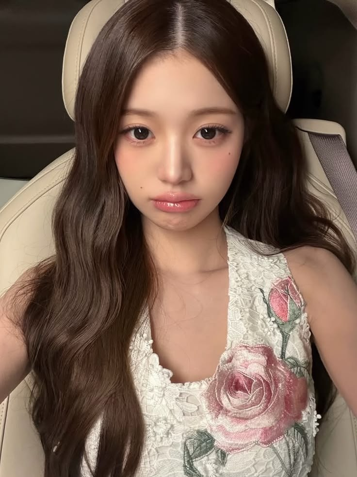
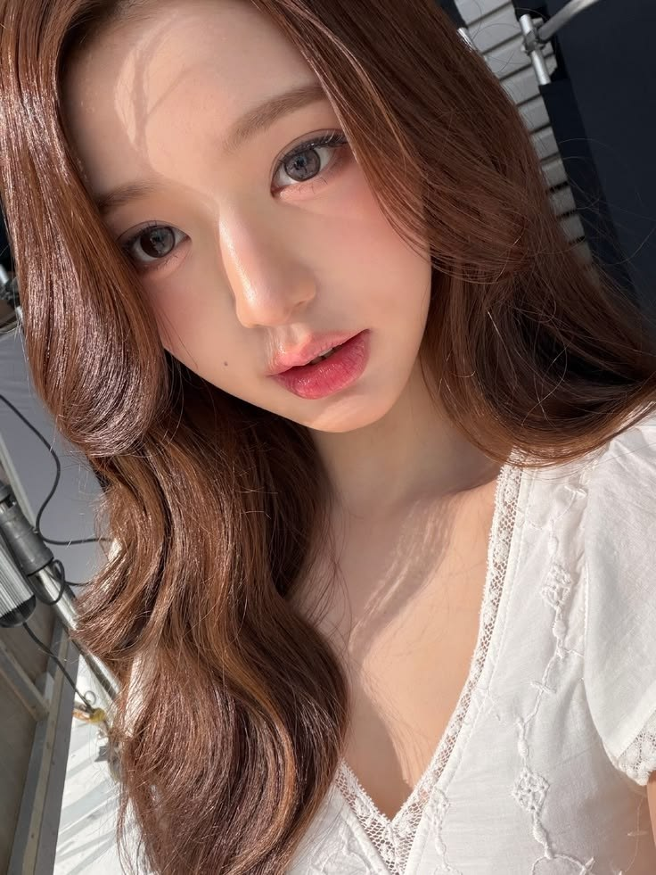
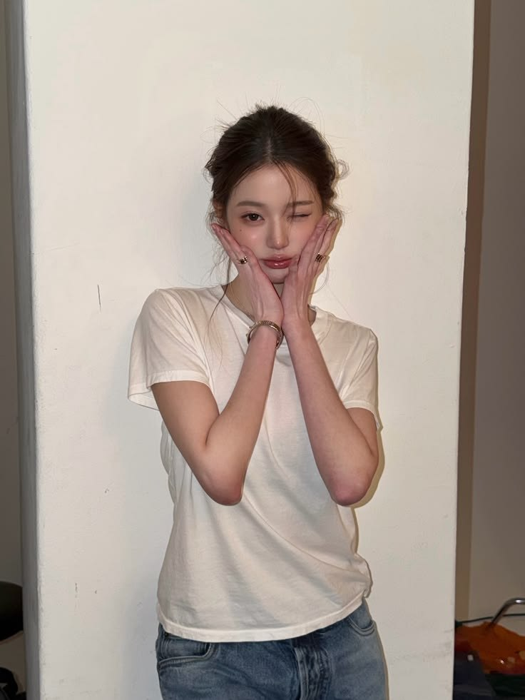
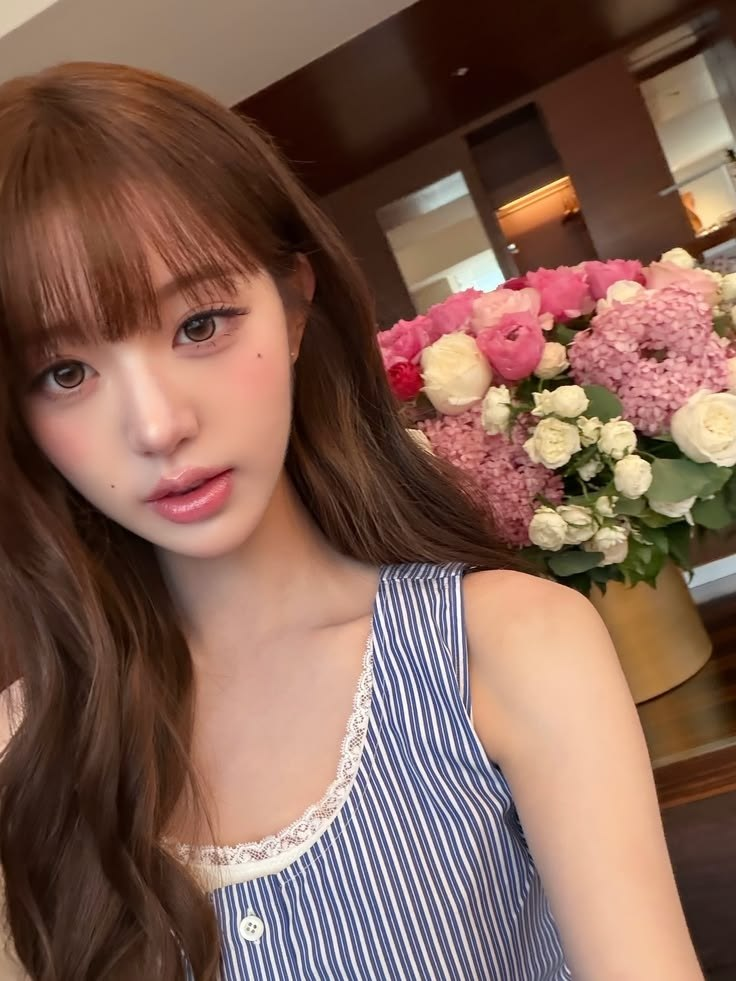
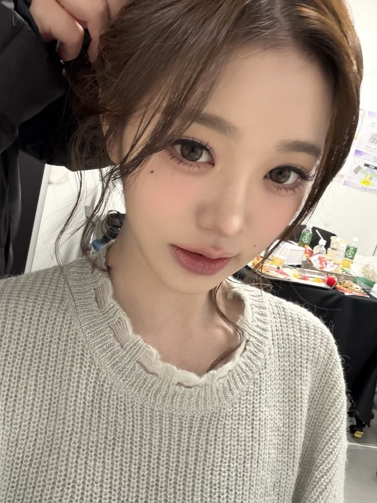
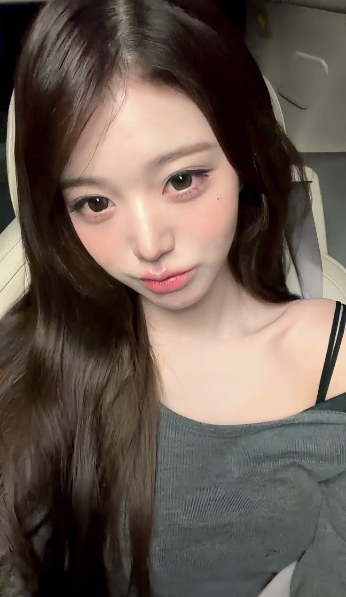
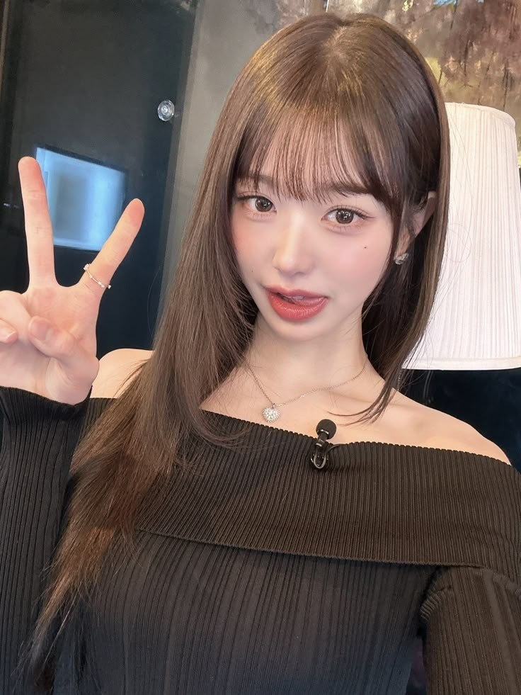
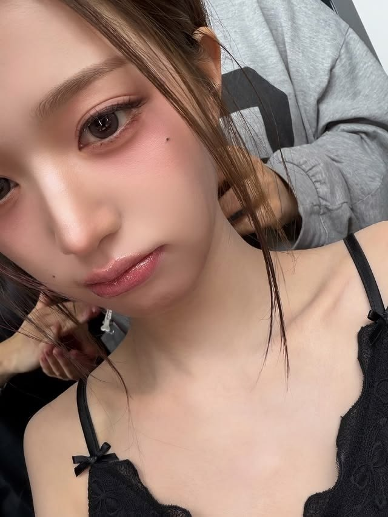
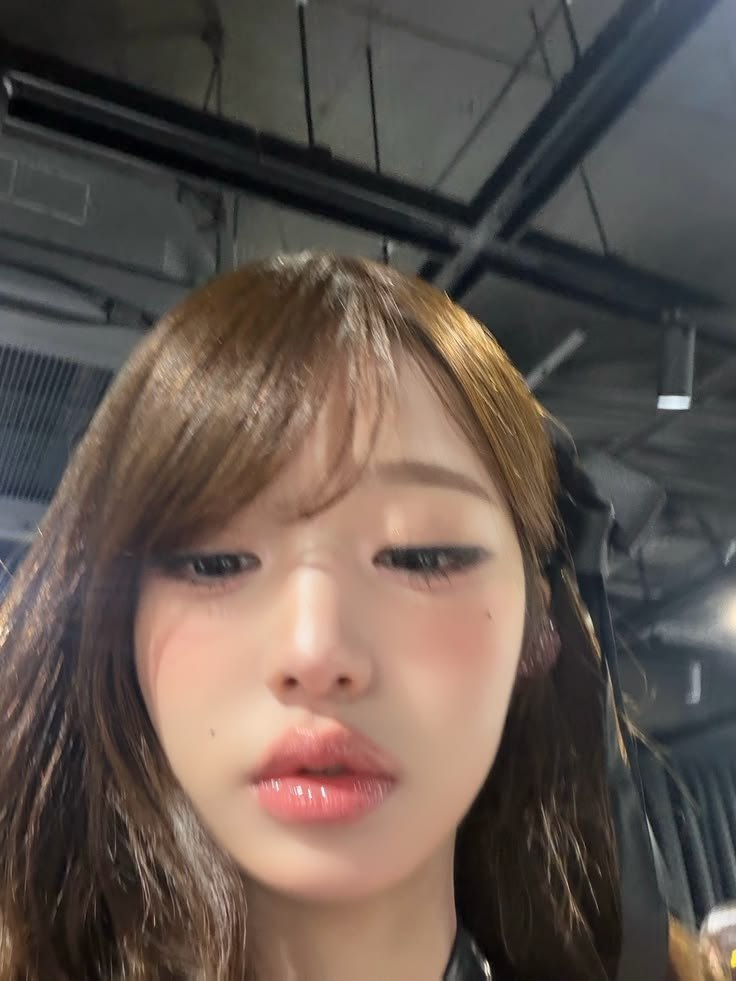
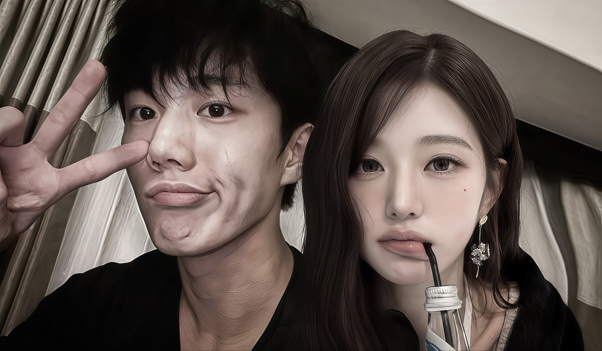

❤️ First Meet
Awalnya cuma kenal biasa, tanpa sadar bakal sampai sejauh ini.
Ada sesuatu yang dari kemarin sebenarnya pengen gua omongin.
Sebenernya gua agak bingung mau ngomongnya gimana wkwk,
soalnya lu udah confess duluan. Pas lu bilang kemarin,
gua malah jadi malu sendiri anjir 😭
Gua juga nggak nyangka lu bakal ngomong kayak gitu,
jadi waktu itu gua bener-bener bingung harus jawab apa.
Soalnya sebelumnya gua sendiri juga masih nggak ngerti
sama apa yang sebenernya ada di pikiran gua soal lu.
Kadang gua mikir mungkin cuma kagum, mungkin cuma karena
kita sering ngobrol, atau mungkin gua aja yang terlalu
kepikiran.
Terus pas gua tau temen gua ternyata juga suka sama lu,
gua malah makin yakin buat ngejauh. Gua mikirnya yaudah,
mungkin lebih baik gua mundur aja daripada nanti malah
bikin semuanya jadi ribet atau bikin temen gua
ngerasa nggak enak.
Makanya mungkin selama ini gua keliatan kayak sengaja
ngejauh atau berubah, padahal gua sendiri juga masih
bingung harus gimana.
Terus setelah lu confess kemarin, gua jadi mikirin
semuanya lagi dan akhirnya gua sadar kalau ternyata
selama ini bukan sekadar kagum doang.
Cuma gua emang nggak pernah berani buat ngomong karena
dari awal gua sendiri belum yakin dan keadaan juga bikin
gua makin milih buat diem.
Jadi sekarang gua mau jujur aja.
Gua pengen nyoba buat lebih dari sekadar temenan sama lu.
Gua nggak tau lu masih bakal mau atau nggak setelah gua
sempet ngejauh, tapi kalau ternyata lu masih punya niat
yang sama kayak kemarin, gua juga nggak mau
terus-terusan pura-pura biasa aja.
Jadi...
Kalau lu masih mau,
mau nggak kita pacaran? ❤️
— Ervino
10 pictures, 10 little memories, and hopefully many more to come.

One of the moments I'll remember.
A little moment, but meaningful.
Somehow, you always make it special.
One of my favorite memories.
Glad I got to know you.
Another moment worth keeping.
You make ordinary moments feel different.
A memory I'll keep close.
Hopefully, this is just the beginning.
And maybe... our story starts here. ❤️Awalnya cuma kenal biasa, tanpa sadar bakal sampai sejauh ini.
Dari obrolan biasa, lama-lama jadi bagian dari keseharian.
Semakin sering ngobrol, semakin gua sadar kalau lu berbeda.
Saat lu confess, gua malah jadi malu dan bingung harus jawab apa. 😭
Akhirnya gua sadar, ternyata perasaan gua bukan sekadar kagum.
Jadi sekarang... gua mau jujur sama lu.
Mungkin gua telat buat ngomong ini. Mungkin juga cara gua selama ini bikin lu bingung karena gua sempet ngejauh.
Tapi setelah gua pikirin semuanya, gua akhirnya sadar kalau apa yang gua rasain ke lu ternyata lebih dari sekadar kagum atau sekadar nyaman karena sering ngobrol.
Jadi kali ini gua nggak mau diem lagi. Gua mau jujur sama apa yang gua rasain.
"Kalau lu masih mau, gua pengen kita coba jalanin ini bareng."
From,